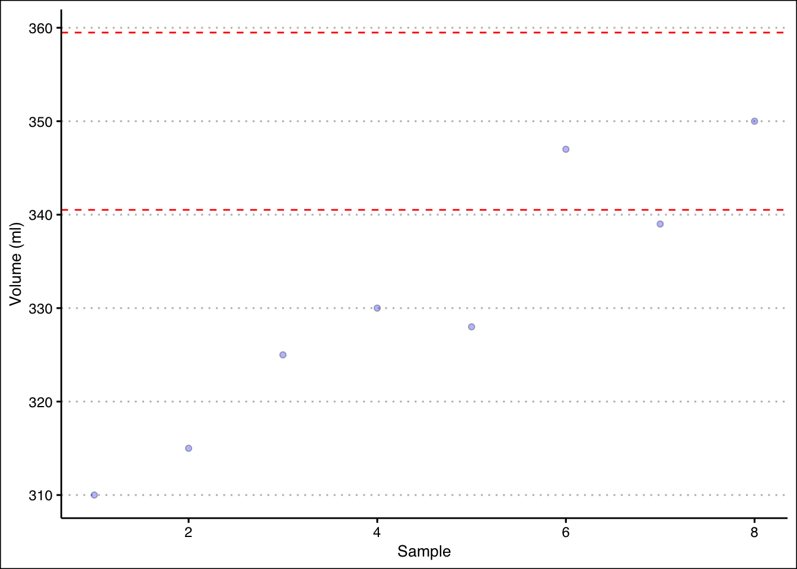

set.seed(10)
Population<-runif(1000,100,200)11 Inference I
11.1 Concepts
Statistical Inference
The goal of statistical inference is gain insight on a population parameter by using a sample statistic. It is required that the sample statistic be calculated from a random sample from the population where each element is selected independently.
A sample mean is used to infer the population mean. Some properties of the sample mean are:
The expected value of the sample means is equal to the population mean (i.e., the sample mean is unbiased). Formally, \(E(\bar x_i) = \mu\).
The standard deviation of the sample means is lower than the population standard deviation. \(\sigma_{\bar x}= \sigma/\sqrt{n}\). We call this measure the standard error.
If the population is normally distributed, then the sample means (\(\bar x\)’s) are normally distributed.
If the population is not normally distributed, the the sample means are also normally distributed if the sample size is large (i.e., \(n>30\)). This is the central limit theorem.
Proportions
Recall that the binomial distribution describes the number of successes \(x\) in \(n\) trials of a Bernoulli process where \(p\) is the probability of success. Here, \(x/n\) is the proportion of successes.
To estimate the population proportion use the sample proportion \(\bar p = x/n\). This estimate is unbiased (i.e., \(E(\bar p)=P\)), where \(P\) is the population proportion.
The standard error of the estimate is \(se(\bar P)= \sqrt { \frac {p(1-p)}{n}}\), where \(p\) is the sample proportion, and \(n\) is the sample size.
By the central limit theorem, the sampling distribution of \(\bar p\) is approximately normal when \(np \geq 5\) and \(n(1-p)\geq 5\).
Useful R Functions
Here are some functions that are handy when simulating data in R.
The pnorm() and punif() functions calculate probabilities for the normal and uniform distributions, respectively.
The rnorm() and runif() functions generate random numbers from a normal and uniform distribution, respectively.
The for() function creates a loop that repeats a procedure a specified amount of times.
The set.seed() function is used to create reproducible results in R when random numbers are used.
11.2 Exercises
The following exercises will help you test your knowledge on the Inference. In particular, the exercises work on:
The Central Limit Theorem.
Sampling Distribution for means.
Sampling Distribution for proportions.
Answers are provided below. Try not to peak until you have a formulated your own answer and double checked your work for any mistakes.
Exercise 1
In this exercise we will be simulating the central limit theorem. You will need R to complete this problem.
- Create a random sample of 1000 data points and store it in an object called Population. Use the uniform distribution with min of 100 and max of 200 to generate the sample. Calculate the mean and standard deviation of the random sample and call PopMean and PopSD, respectively.
- Create a for loop (with 1000 iterations) that takes a sample of 10 points from population, calculate the mean, and then store the result in a vector called SampleMeans. Calculate the mean of the SampleMeans object. How does this mean compare to PopMean? How does the standard deviation compare to PopSD?
- Create a histogram for the sample means. Is the distribution uniform? Is it normal? What is the probability that the sample mean is between 140 and 160?
Exercise 2
A random sample of \(n=100\) is taken from a population with mean \(\mu=80\) and standard deviation \(\sigma=14\). Calculate the expected value and standard error for the sampling distribution of the sampling means. What is the probability that the sample mean falls between \(77\) and \(85\)?
Assume that miles-per-gallons of combustion cars are normally distributed with mean of \(33.8\) and standard deviation of \(3.5\). What is the probability that the mean mpg of four randomly selected cars is more than \(35\)? What is the probability that all four selected cars have mpg greater than \(35\)?
Exercise 3
- A random sample of \(n=200\) is taken from a population with a proportion of \(p=0.75\). Calculate the expected value and standard error of the proportion sampling distribution. What is the probability that the sample proportion is between \(0.7\) and \(0.8\)?
2.Twenty-three percent of employees at a fintech firm work from home. If we take a sample of 50 employees, what is the probability that more than 20% of them are working from home? What if the sample increases to 200? Why does the probability change?
Exercise 4
- A production process for energy drinks is being evaluated. The machine that fills the cans is calibrated so that each can has \(350\)ml of drink with a standard deviation of \(10\)ml. Every hour, ten cans are sampled and the average amount of drink is recorded (see table below). Is the machine working properly?
| 1 | 2 | 3 | 4 | 5 | 6 | 7 | 8 |
|---|---|---|---|---|---|---|---|
| \(\bar{x}=310\) | \(\bar{x}=315\) | \(\bar{x}=325\) | \(\bar{x}=330\) | \(\bar{x}=328\) | \(\bar{x}=347\) | \(\bar{x}=339\) | \(\bar{x}=350\) |
- The production of Good Guy dolls has a \(1\)% defective rate. A quality inspector takes five samples of size \(1000\). The proportions are shown in the table below. Is the production process under control?
| 1 | 2 | 3 | 4 | 5 |
|---|---|---|---|---|
| \(\bar{p}=0.009\) | \(\bar{p}=0.012\) | \(\bar{p}=0.008\) | \(\bar{p}=0.011\) | \(\bar{p}=0.0102\) |
11.3 Answers
Exercise 1
Let’s start by creating the random sample. We can use the runif() function in R to do this. We will set a seed so that results are reproducible.
Next, we can save the mean and the standard deviation of the population in two different object:
PopMean<-mean(Population)
PopSD<-sd(Population)The mean and standard deviation are \(150.53\) and \(29.2\). Let’s quickly create a histogram of population, so that we can convince ourselves that the data is uniformly distributed.
hist(Population, main="", ylim=c(0,160), col="#F5F5F5")- Now let’s create a for loop that allows us to sample the population several times. In fact, we will sample the population 1000 times and record the mean of the samples.
nrep<-1000
SampleMeans<-c()
for (i in 1:nrep){
x<-sample(Population,10,replace=T)
SampleMeans<-c(SampleMeans,mean(x))
}Now we can calculate the mean of the sample means in R:
mean(SampleMeans)[1] 150.4177Note that the mean is very close to PopMean. In the limit (that is if we take many more samples), these two values are equal to each other. Now let’s calculate the standard deviation of the sample means.
sd(SampleMeans)[1] 9.134147As you can see, the standard deviation is much lower. In fact, if we take PopSD and divide by 10 (the size of the sample), we should get close to the standard deviation of the sample means.
PopSD/sqrt(10)[1] 9.233644- To create the histogram we use the
hist()function once more:
hist(SampleMeans, main="", ylim=c(0,300), col="#F5F5F5")The distribution looks normal. To be clear, if the population follows a uniform distribution, we have shown that the distribution of the sample means is normal with a mean equal to the population mean and a smaller standard deviation.
We can use the distribution of the sample means to calculate the probability. Noting the the distribution is normal:
pnorm(160,mean(SampleMeans),sd(SampleMeans))-pnorm(140,mean(SampleMeans),sd(SampleMeans))[1] 0.7258913There is a \(72.59\)% probability that the sample mean is between \(140\) and \(160\).
Exercise 2
- The expected value is \(80\) since it is equal to the mean of the population. The standard error is \(1.4\). The probability is \(98.38\)%.
We can use R as a calculator to find the standard error.
14/sqrt(100)[1] 1.4We can use pnorm() to find the probability:
pnorm(85,80,1.4)-pnorm(77,80,1.4)[1] 0.9837602- The probabilities are \(24.66\)% and \(1.8\)%.
For the first probability we can use a sample size of \(4\) and use the standard error in the pnorm() function.
pnorm(35,33.8,3.5/sqrt(4),lower.tail = F)[1] 0.2464466For the second probability we can first calculate the probability that a randomly selected car has mpg greater than \(35\). In R:
(p35<-pnorm(35,33.8,3.5,lower.tail = F))[1] 0.365853Since draws are independent we get:
p35^4[1] 0.01791539Exercise 3
- The expected value is \(0.75\), the same as the population. The standard error is \(\sqrt{p(1-p)/n}=0.03\). The probability for a sample of \(200\) is \(0.8975\).
The standard error is given by:
sqrt(0.75*0.25/200)[1] 0.03061862In R we can use the pnorm() function one more time to find the probability.
pnorm(0.8,0.75,sqrt(0.75*0.25/200))-pnorm(0.7,0.75,sqrt(0.75*0.25/200))[1] 0.8975296- The probability with a sample of \(50\) is \(69.29\)%. When the sample is \(200\) the probability is \(84.33\)%. As the sample size increases the standard error goes down. This means that the distribution of the sample proportions gets tighter and there is more area to the right of \(\bar{p}=0.2\).
In R we can use the pnorm() function one more time with a mean of \(0.2\) and \(n=50\).
pnorm(0.2,0.23,sqrt(0.23*0.77/50),lower.tail = F)[1] 0.6928964Updating the code so that \(n=200\) yields:
pnorm(0.2,0.23,sqrt(0.23*0.77/200),lower.tail = F)[1] 0.8433098Exercise 4
- The process seems to be out of control. In the early samples, the machine is not filling the cans with enough drink. Although, in the later periods the machine reverts back to the expected performance, it seems unlikely that it will remain functioning correctly.
Let’s start by calculating the upper and lower limits in R.
dataEx1<-c(310,315,325,330,328,347,339,350)
ulEx1<-350+3*(10/sqrt(10))
llEx1<-350-3*(10/sqrt(10))We can graph the samples and the limits to determine the stability of the production process.
plot(dataEx1, type="b", ylab="Mean Gallons",
xlab="Period", pch=21, bg="blue",ylim=c(280,380))
abline(h=ulEx1,col="red")
abline(h=llEx1,col="red")
- Good Dolls production looks good. All proportions fall between three standard errors of the mean.
Once more we can calculate upper and lower limits for the proportions.
dataEx2<-c(0.009,0.012,0.008,0.011,0.0102)
ulEx2<-0.01+3*sqrt(0.01*0.99/1000)
llEx2<-0.01-3*sqrt(0.01*0.99/1000)Graphing the results in R we can observe the production process and the sample proportions.
plot(dataEx2, type="b", ylab="Proportion Defective",
xlab="Period", pch=21, bg="blue",ylim=c(0,0.02))
abline(h=ulEx2,col="red")
abline(h=llEx2,col="red")